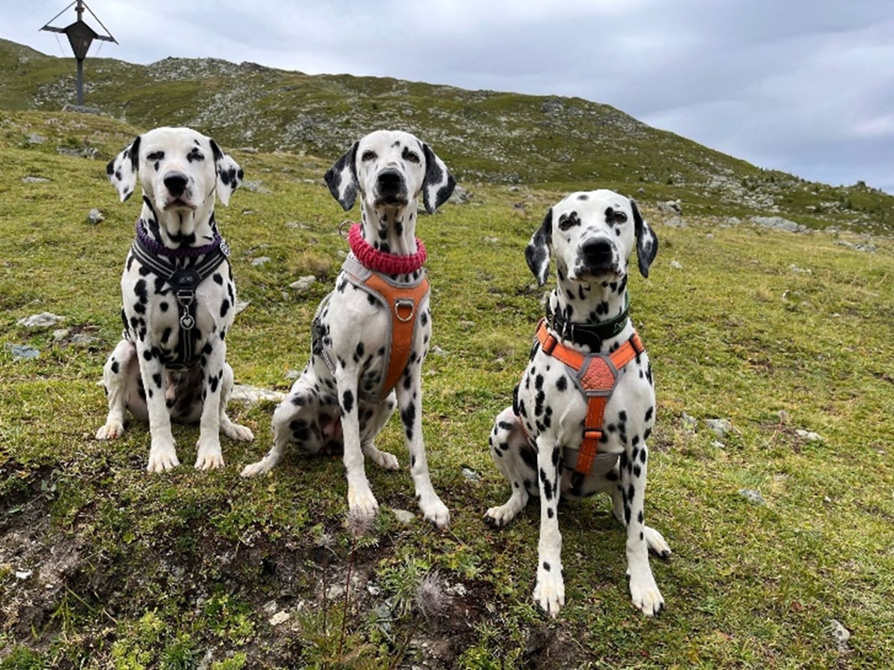

Fiama und LUA
Mein Name ist Fiama vom Bahrener Hof & ich bin eine LUA-Hündin Geboren am 31.03.2022Tochter von Dorie vom Bahrener Hof (LUA) & Giaro vom Lindenthalerdörfli (HUA) 
Von Links: Giaro, Fiama & Dorie (08.08.2023)
Was bedeutet LUA (Low-Urat-Acid Projekt) und wie ist es entstanden?Das Dalmatian Backcross Project (Dalmatiner-Rückkreuzungs-Projekt) begann 1973 mit einer Einzigen
Verpaarung eines AKC-anerkannten Champion-Pointer Rüden und einer AKC- anerkannten Dalmatiner Hündin. Dr. Robert Schaible
(USA) führte diese Verpaarung durch, um einen verbreiteten genetischen Defekt beim Dalmatiner zu beheben. Dieser Defekt *
beeinträchtigt den Harnsäure-Stoffwechsel des Dalmatiners. Bleibt dieser unberücksichtigt, kann es zu Problemen durch den
erhöhten Harnsäuregehalt im Urin kommen, wie zum Beispiel Urat Kristalle, Harngries oder Urat Steine. Schlimmstenfalls kann es zu einem
Harnröhrenverschluss und sogar zum Tod kommen. Mit der richtigen Ernährung und ausreichender Wasserzufuhr wird das Urat jedoch im überwiegenden Fall
problemlos mit dem Harn ausgeschieden.
Heute, mehr als 40 Jahre später, weisen die Ahnentafeln der Nachkommen zu 99,98% AKC registrierte
Dalmatiner aus. Laut DNA-Analyse stimmt deren DNA zu 99,8% mit der DNA der übrigen AKC- Dalmatiner Population überein. LUA- (Low Uric Acid) Dalmatiner,
also Dalmatiner mit normalem Harnsäurespiegel (auch als NUA für Normal bezeichnet) weisen eine zehnfach erniedrigte Harnsäure/Creatinin-Verhältnis im
Vergleich zu HUA- (High Uric Acid) Dalmatinern auf. Mehr als 4 Jahrzehnte lang war es lediglich eine Handvoll Züchter, die ihre Zeit und Leidenschaft den
LUA-Dalmatinern widmete. Es ist nicht übertrieben, dabei von einem harten Kampf in der Welt der Rassehundezucht zu sprechen. Erst im Jahre 2011 wurden die LUA-
Dalmatiner vom Britischem und Amerikanischem Kennel Club anerkannt. Seitdem wurden die LUA-Dalmatiner in verschiedenste Länder exportiert, um die dortigen Zuchtanstrengungen
zu unterstützen.
* Der Dalmatiner bildet als Stoffwechselendprodukt der Eiweiß-Verdauung Harnsäure statt Allantoin, die mit dem Urin ausgeschieden wird. Da die Harnsäure (Urat) nicht wasserlöslich ist wie das Allantoin, besteht das Risiko, dass Harngries oder Harnsteine gebildet werden.
LUAs können mischerbig oder reinerbig sein. Ein reinerbiger LUA vererbt das gesunde Gen an jeden seiner Nachkommen. Ein mischerbiger LUA dagegen nur an 50%. Beim Wurf von Fiama hatte
die Züchterin Glück, denn von den 10 Welpen haben sieben das LUA-Gen geerbt.
Wichtig ist, dass jedem Interessenten oder Besitzer eines LUA-Dalmatiners bewusst ist, dass LUA-Träger nicht automatisch von allen nur in Frage kommenden Krankheiten befreit ist.
Einzig und allein Harnsäure-bezogen Krankheiten und Probleme werden ausgeschlossen! LUA-Dalmatiner werden keine Uratsteine entwickeln, sehr wohl können sie aber z.B. alle anderen Sorten von Steinen formen.
Fiama vom Bahrener Hof
Mit LUA, kann vermehrt Stichelhaare in den Punkten haben
Giaro vom Lindenthalerdörfli
Ohne LUA (HUA) klar abgegrenzte Punkte
LUA- (Low Uric Acid) Dalmatiner aus dem Backcross Project
HUA- (High Uric Acid) Dalmatiner wie wir sie in der Schweiz kennen
Bericht von Franziska & Roland Roggli, Besitzer von Giaro und Fiama
Quellen
Dalmatiner Wissen www.dalmatiner-wissen.de
LUA Dalmatiner Welt www.luadalmatians-world.com/de/
Dalmatiner vom Bahrender Hof www.dalmatiner-vom-bahrener-hof.de
Genomia Hyperurikosurie www.genomia.cz/de/test/hyperuricosuria/
Websiten - Sammlungen
LUA Dalmatiner www.lua-dalmatiner.blogspot.com
Dalmatiner Wikipedia https://de.wikipedia.org/wiki/Dalmatiner